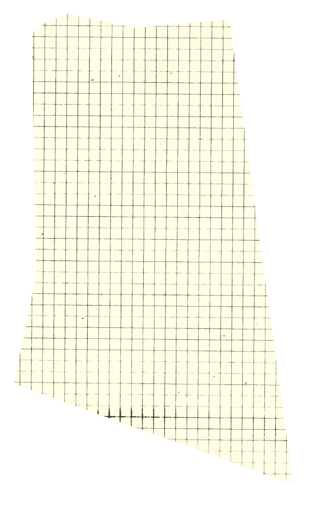
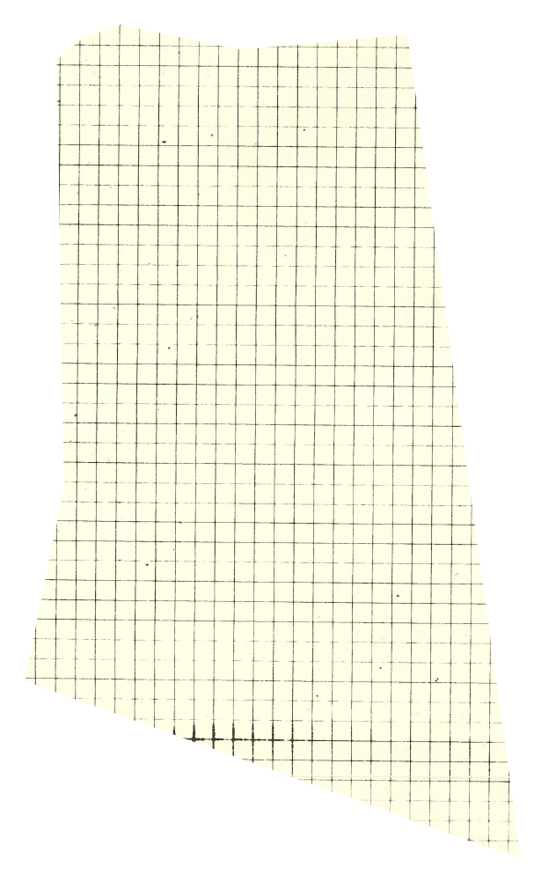

 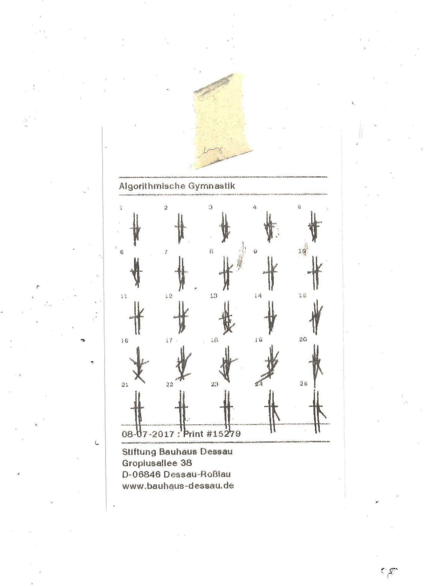
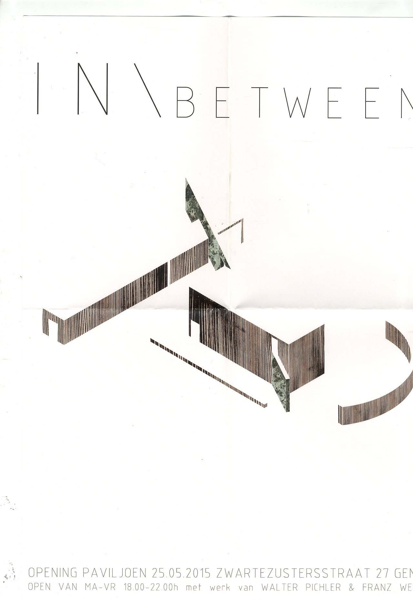
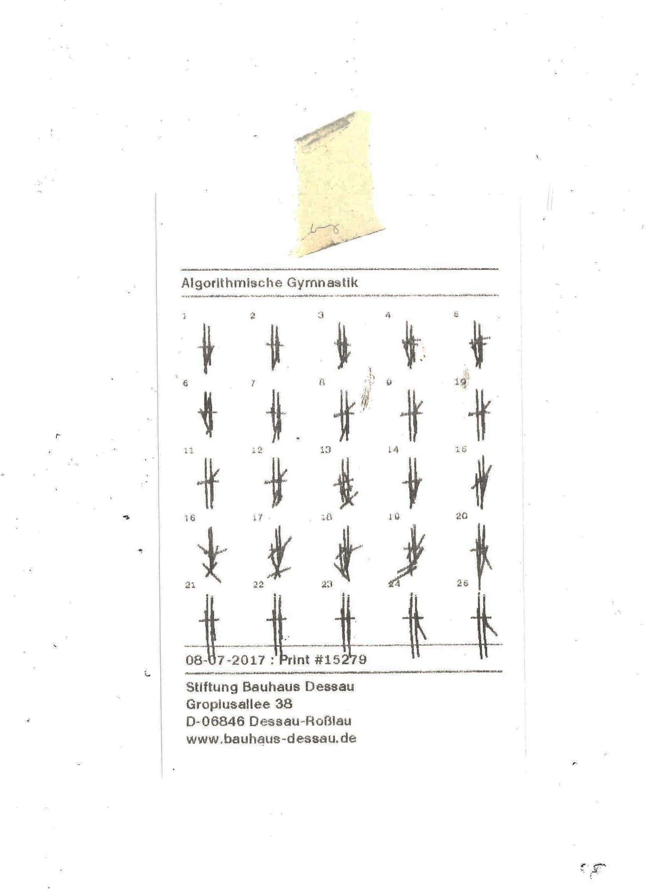
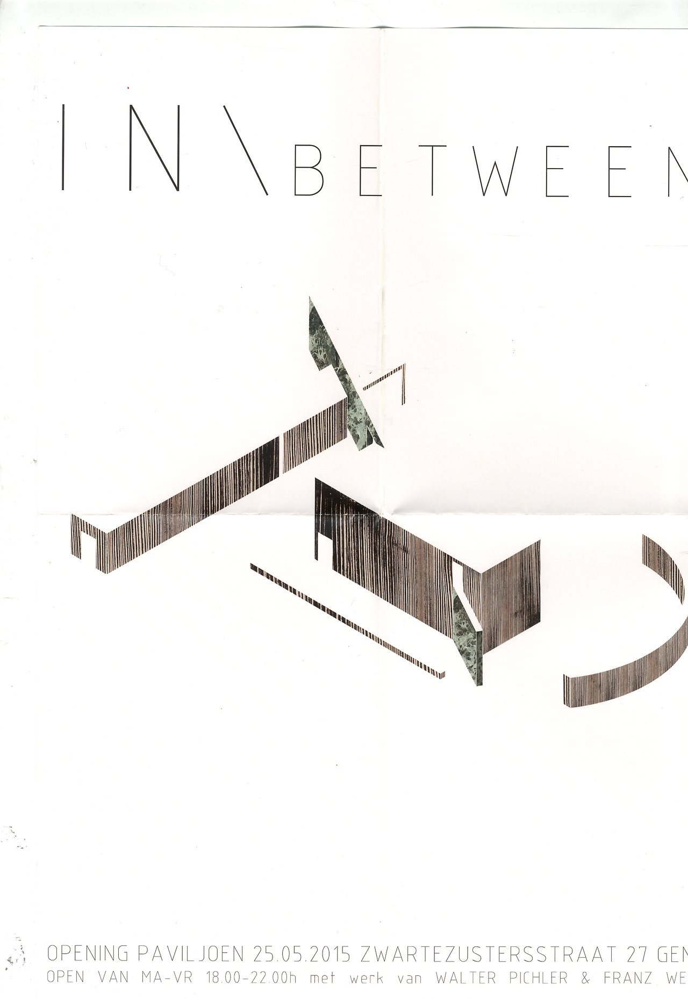
 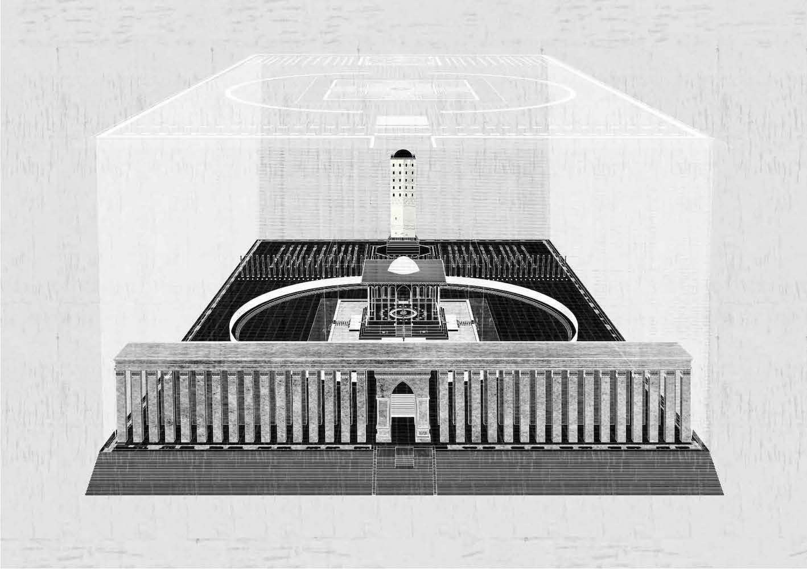
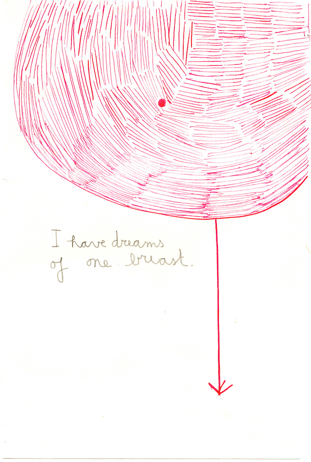
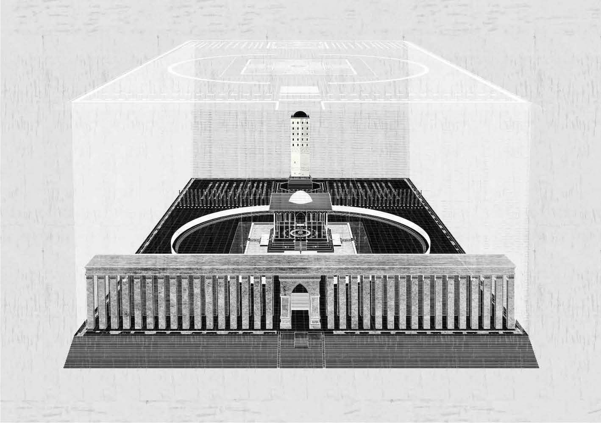
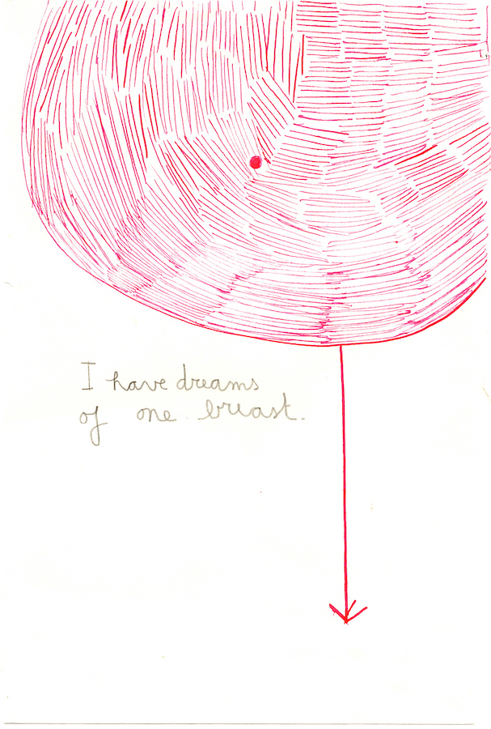

 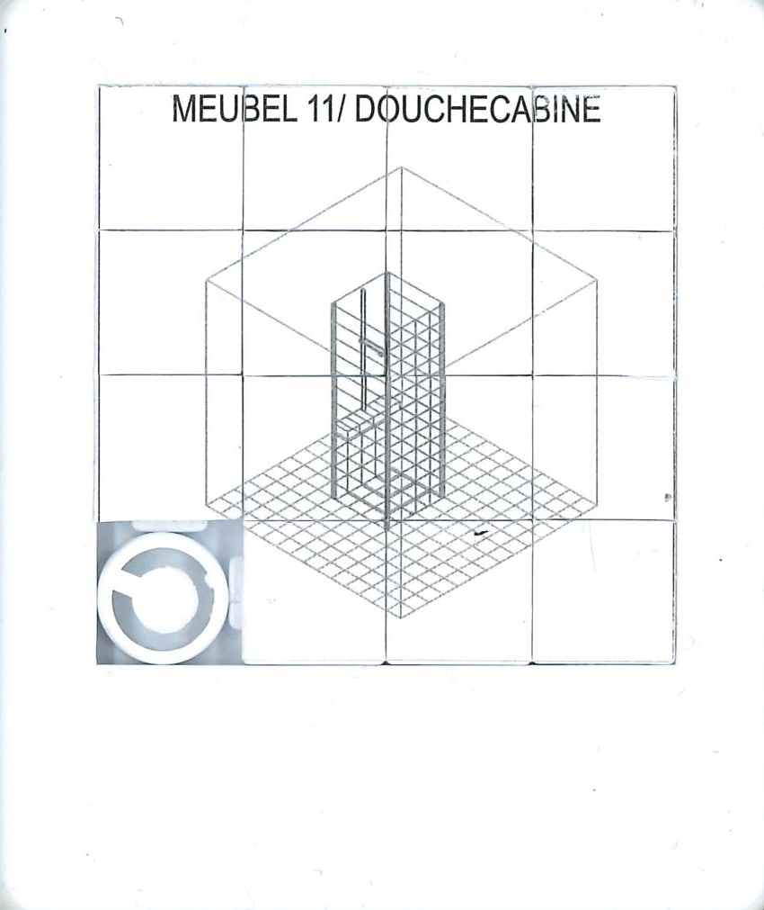
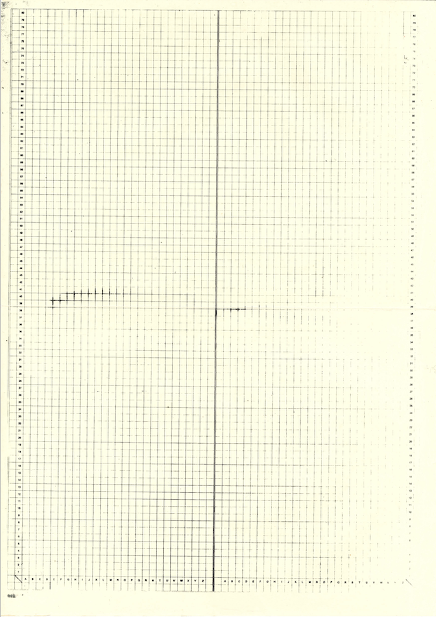
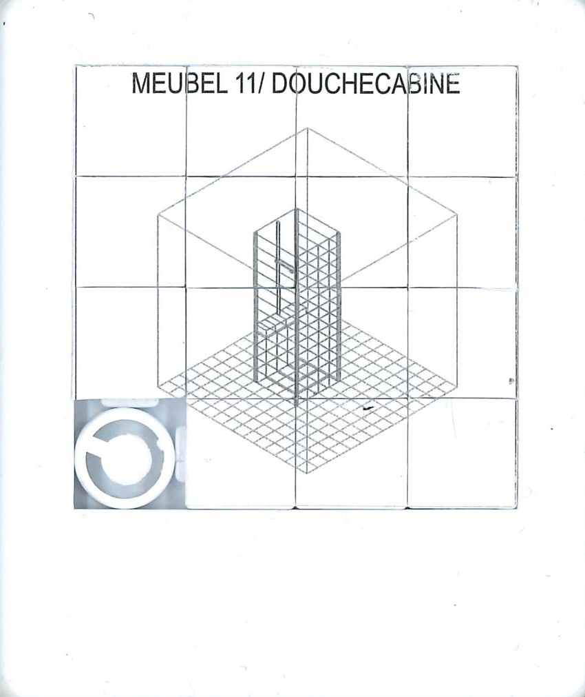
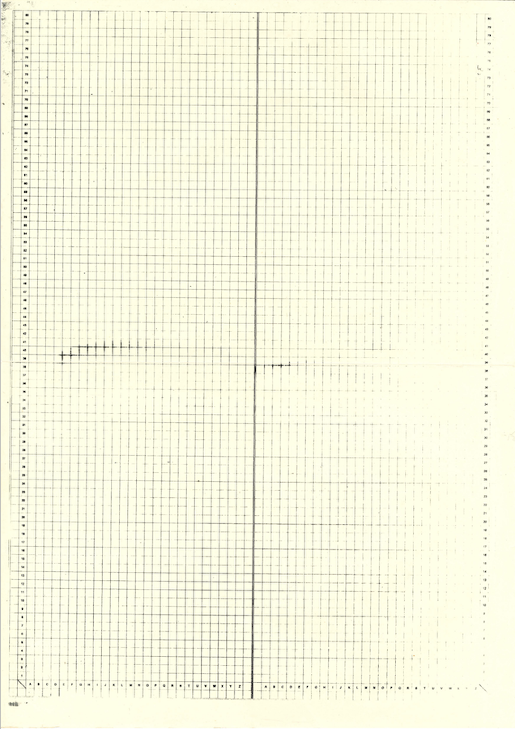


ENSEMBLE: an architecture of the inbetween.
//
A letter from my dear friend, Weronika Zalewska.
Dear Shervin,
I feel that when architecture turns towards the investigation
of personal experiences
- their influence on perception of the self and the outside world - the
form can become as if a mold turning one’s state of mind into a place, transcending
materiality while becoming an open narrative. It’s something other than an
architecture of ideology or principle; shifting towards the dialogue of possibilities
rather than hoping for ready solutions. Embracing fluidity, as if the only
thing sure- in praise of no definite answers. Movement and reinvention- a mode
seemingly closest to nature.
Creating from emotions and impressions explores the modes of poetry within
architecture.
Placing the architect within the work not only as a maker but an artist reflecting
upon personal stories, placing them into a shared context where they become
public.
It’s an open-ended approach, one of no answers but an open conversation of
the form with each participant, in opposition to whether the commercial or the
functional. A world within a world. A heterotopie. Holding the belief that it is
our inner being that holds the genuine experience of the world.
Shaping and exposing the reality built from a subjective
perspective is in fact the purest cultivation of culture, opposing to the monoculture
of ready ideas.
And what emerges when the mind that wishes to create a space, is one hang
up in-between cultures? What if the form is to give a space for two seemingly
distant worlds to merge in a dialogue? And what if one passes the dialogue on to
the building itself?
In your project you seem to merge the co- and counter-existing poles of your
identity- the Iranian and the Western, wishing to materialize both cultures
within an open form as they live within your inner and outer landscape; traveling
with you between the countries, the scattered members of family, the
thoughts, the rituals. With such generosity of experience, you seem to create a
fluidity of life narratives outside of political appropriation and the forced choice
of singular identity proposed by the hegemony of nation-driven choices. The
recent trip you took to Iran, both a challenging confrontation and a sentimental
dialogue, somehow proved the confusion taken from the expectations of being
culturally consistent. The story of being both shattered and familiar is known
to many, with the basic description of “feeling Eastern when in West, feeling
Western when in East”. Seems that such reflection made you pose a question
whether your identity meets gaps and lacks due to not being either Western or
Eastern fully, or perhaps transcends these by creating a third one of your own,
far from the simplified perception
East or West, as you know both from the
genuine world of family, home street, secret; trying to resolve cliches, or merge
different morals.
I imagine that during the trip you took to Iran last winter, these reflections were
spinning around cities and landscapes, landing on whether stones or palaces, in
search for nothing more than a feeling of familiarity, movement, or a mirror to
what you carried inside.
All so that your being could become its own maker of opinions, starting with the
human, not politics or mass belief. A different approach to the cultural heritage,
one similar to looking at a stone-investigating from each angle, seeking what one
connects to… And there it emerges.
When one opens the eyes beyond the known patterns, the elements of the two
cultures start to play with each other, as if a brother and sister losing the grip of
which arm is whose. All starts to become less clear, or less necessary to find out,
as if a game of possibilities.
This is true even to the politicized yet endlessly multi-angled element of our
lives such as censorship, which spinned around seemed to spin around your
head during this year and throughout the trip especially. The Iranian policy of
moral state control vs the Western sell-out to the capitalist ideas which enter
each fragment of life- even this division seems as a simplification and deserves
an ongoing reflection. And when it all comes to place, it becomes clear that
there’s not one answer. And that a word cannot always grasp that complexity. Or,
through its means, makes the dialogue more complicated and estranged.
When sharing with me the stories of the two cultures, Iran seems to keep within
people the cultivation of some secret- the treasuring of life within the walls
of the house and family,motivated by the culture and too through country’s isolation or limits imposed by the regime.
On the other hand, the West gifts an open conversation, room for initiative and spontaneity, as much as gives us into the hands of consumerism, even within the house, within a feeling.
And then, in a dialogue which seems to need a metaphoric form, something more universal than words, there comes the intriguing beauty and familiarity of both- the western functional architecture and the presence of sacredness within the Persian palace. The beauty of both.
The wish for fluidity. For an open space. For a passionate puzzle- the richest of relationships_ not wishing to resolve some quest, but to share with one another, things real, as ours.
From that wish, not one definite work is born, but many, as if a coexistence of elements, all as genuine. Just as there is no one true poem in one’s mind but many, you create forms in praise against finalizing, but in praise of renewing, as the most organic trait of the world- durational, ever-adjusting, participatory.
Within your project, you decided to design a few palaces that materialize the in-between state of cultures. Round arches meet the square cubes, ornaments come together with structural puzzle-pieces, and you design the forms so they can enter each other as one organism. I travel within, experiencing transcendence beyond time, place and culture. The transparency of the buildings invites into the dialogue the surroundings, as if an anti - tyranny, allowing the works to change themselves together with the surroundings, becoming a reflection, a mirror, a true Present- emitting the elements of Now as the ever necessary time for re-interpretation. Now as a result of the actions and cycles, and the open potential for future. As a necessary link to that, the water is present in each of the buildings’ central space. As a source of life, as a connection of each culture and being, as a ritualistic purification.
To me, these palaces become as if a space for either solo or collective meditation or reflection. They are a metaphor for the pledge for honesty, the transparence of power, the humbleness. They give room to coming back to both ourselves and our surroundings, as a base of culture. The lack of divided rooms. The praise of no and all-functionality.
The abolishment of censorship in favor of honesty; and being able to see things as they are.The purity. The light. The dialogue open with the world. I enter with you the complex of mirrored landscapes of mind and materiality.
I experience architecture unfolded into a space of life’s cycles and rituals, outside of the linear time yet with a space for reinvention for each visitor. It’s a world that allows a Hegelian belief of history as a deductive process, abandoning unmovable blocks and ready-answers, instead seeking back the relationship to the futures and the pasts as our contexts deriving from various places yet from one consciousness. A human within a moving Universe, all in a quiet need of lucidity.
With Love,
Weronika, spring 2018


 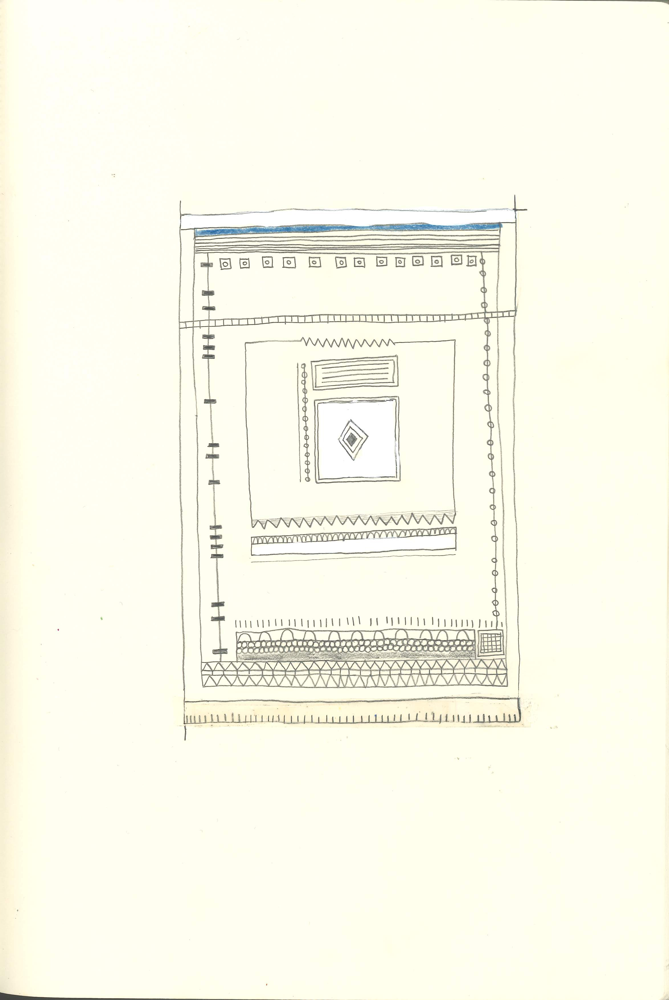
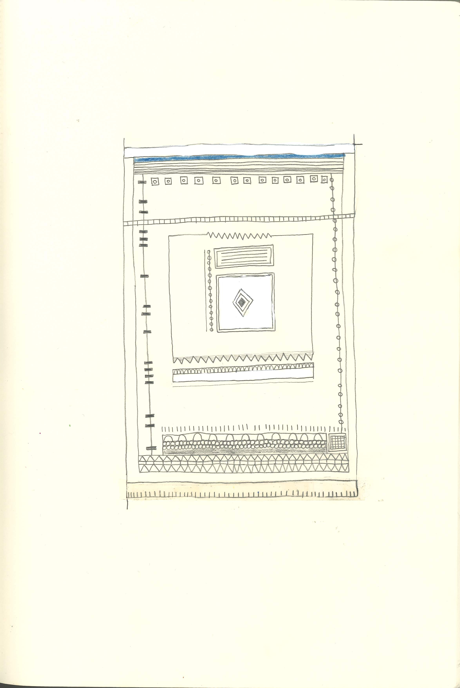


 //
//
 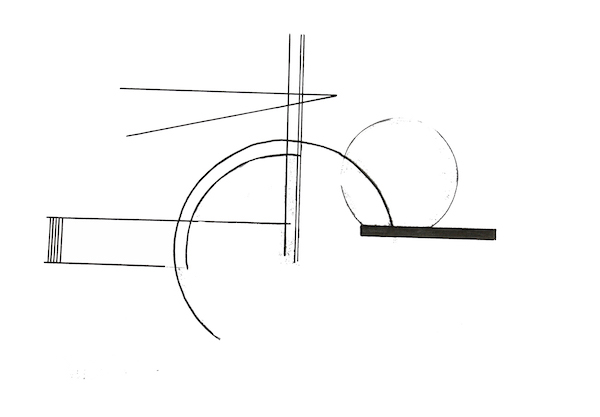 //VOLLEDIGE AFBEELDING
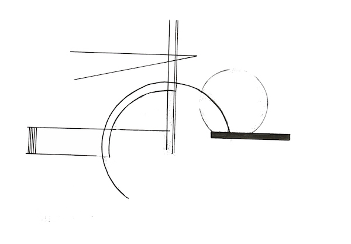 //VOLLEDIGE AFBEELDING